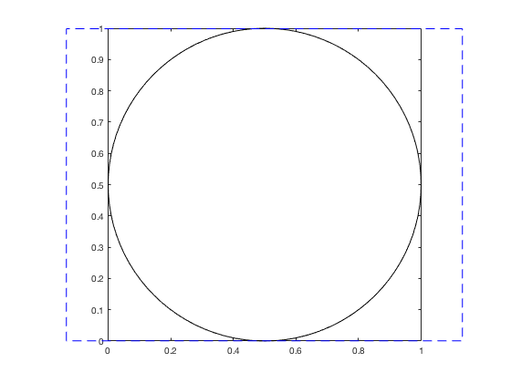

plotboxpos.m: Plot box (visible) position
Author: Kelly Kearney
This repository includes the code for the plotboxpos.m Matlab function.
This function returns the position of the plotted region of an axis, which may differ from the actual axis position, depending on the axis limits, data aspect ratio, and plot box aspect ratio. The position is returned in the same units as the those used to define the axis itself. This function can only be used for a 2D plot.
Contents
Getting started
Prerequisites
This function requires Matlab R14 or later.
Downloading and installation
This code can be downloaded from Github or the MatlabCentral File Exchange. The File Exchange entry is updated daily from the GitHub repository.
Matlab Search Path
The following folders need to be added to your Matlab Search path (via addpath, pathtool, etc.):
plotboxpos-pkg/plotboxpos
Syntax
pos = plotboxpos(h) returns the 1 x 4 position vector pos for the axis with handle h. The units of pos will match those of the axis' parent object (typically the figure).
Examples
We start by plotting a circle, changing the axis aspect ratio to be 1:1 and the axis limits to be tight to the data.
h.ax(1) = axes; h.ex = rectangle('position', [0 0 1 1], 'curvature', [1 1]); axis tight equal; box on;

The axis 'Position' property still corresponds to the full potential axis space, discounting the axis modifications we just made.
pos1 = get(h.ax(1), 'position'); annotation('rectangle', pos1, 'edgecolor', 'b', 'linestyle', '--');
The plotboxpos function returns the position the axis is actually using with its current axis ratio settings;
pos2 = plotboxpos(h.ax(1)); annotation('rectangle', pos2, 'edgecolor', 'r', 'linestyle', '-.');

Contributions
Community contributions to this package are welcome!
To report bugs, please submit an issue on GitHub and include:
- your operating system
- your version of Matlab and all relevant toolboxes (type ver at the Matlab command line to get this info)
- code/data to reproduce the error or buggy behavior, and the full text of any error messages received
Please also feel free to submit enhancement requests, or to send pull requests (via GitHub) for bug fixes or new features.
I do monitor the MatlabCentral FileExchange entry for any issues raised in the comments, but would prefer to track issues on GitHub.